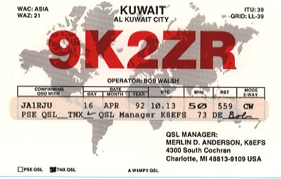

Flash ! DX
|
 


|
|
|
|

|
|
|
[Back Issues Mar.2024]
TIME:UTC(+09:00JST)
31.Mar.2024(15:00d)
-----------------------------------------------------------------------------------
[DX(FT8/FT4=50.313/323MHz)=SA/NA/Pacif/Asia/JA1.../JA1/2/3/4/5/6/JS6-JA7/8/9/0]
-----------------------------------------------------------------------------------
03:46 FK8HA/+03 03:46 FK8CP/+07=CQ 03:55 FK4TK/-19=CQ 04:09 VK4RF/-14
04:09 KH6HI/-19 04:10 VK4QG/-04 04:37 ZL1RS/-14=CQ 05:02 KB7G/KH6/-04
05:13 KG7G/KH6=QSY FT4 05:28 VK2TRD/+04 05:48 VK3OTR/-19 05:49 KH6PE/-18
05:51 VK4CZ/-16 05:51 ZL1AKW/-07 05:53 KG6DX/-14=CQ 05:55 VK3BD/-19
05:56 ZL1RQ/-05 05:56 VK4HJ/-15 06:01 VP6MW/-09 06:06 VK4SHG/-19=CQ
06:08 VK6NH/-07 06:10 VK4UV/-14 06:11 VK4SY/-12 06:18 VK2AMT/-21
06:19 VK3FZ/-08=CQ 06:20 VK4TUX/-20 06:25 VK4DCM/-14 06:30 VK4FJ/+04=CQ
06:30 VK2AHE/-24=CQ 06:36 VK2TTL/+01 06:38 VK3DUT/-13 06:38 VK3BY/-21
06:41 VK7ZTA/-14 06:41 VK7DG/-14=CQ 06:51 VK7AC/-19=CQ 07:30 VK5AYD/-19=CQ
07:34 VK4KSY/+03 07:35 3D2AG/+05=CQ 07:43 VK4KX/+03 07:59 VK4PN/-11
08:03 VK6ZLX/-18=CQ 08:18 VK4MA/+04 08:35 VK6BSA/+0=CQ 08:36 VK2XN/-22=CQ
08:56 VK4WTN/-06 09:20 VK4WDM/+02 09:27 VK9DX/-05 (Norfolk Is)
09:31 VK4CH/-03 11:24 VK8AW/+00 12:12 DU7/PA0HIP/-08 12:45 YC9FZ/-09=CQ
13:12 YE1BON/-11=CQ
+
* Open to other station & area
+
02:33 TX5XG/JA2 03:46 YJ0VK/JA1 04:11 HC2FG/JA1-7 05:12 NH6SS/JA7
05:14 KH6JY/JA1 13:02 KP4AJ/JA1 13:11 KP4EIT/JA1
+
-----------------------------------------------------------------------------------
[DX(FT8=50.313/323MHz & Q65=50.275MHz) Report from Kochi(PM63)= TNX JA5FFJ]
-----------------------------------------------------------------------------------
0247 TX5XG/-13 0403 AH6U/-13 0403 KH6HI/-09 0414 FK8CP/-08
0414 FK8HA/-08 0447 ZL1RS/-14 0501 KB7G/KH6/-16 0513 VK4ADC/-20
0522 VK2AMT/-22 0528 VK2TRD/-17 0530 VK4PN/-19 0551 VK4CZ/-06
0556 VK4HJ/-08 0601 VP6MW/-08 0606 VK4SHG/-11 0609 VK4UV/-11
0611 VK4SY/-07 0620 VK4TUX/-13 0624 VK4DCM/-05 0630 VK4FJ/-18
0632 VK6JJJ/-10 0632 VK2AHE/-16 0644 VK3FZ/-13 0644 VK2TTL/-16
0645 VK3BD/-11 0645 VK6DU/-12 0648 VK6ZM/-19 0659 VK3XL/-22
0701 VK7AC/-19 0705 VK3DUT/-18 0706 VK3OTR/-10 0720 VK6NH/-02
0734 3D2AG/-08 0735 VK4KSY/-18 0749 VK4KX/-14 0804 VK6ZLX/-24
0818 VK4MA/-03 0834 VK6BSA/-17 0852 YJ0VK/+03 0930 VK9DX/-15
0931 VK4CH/-11 1124 VK8AW/+02
-----------------------------------------------------------------------------------
TIME:UTC(+09:00JST)
30.Mar.2024(15:00d)
-----------------------------------------------------------------------------------
[DX(FT8/FT4=50.313/323MHz)=SA/NA/EU/Pacif/Asia/JA1.../JA1/2/3/4/5/6/JS6-JA7/8/9/0]
-----------------------------------------------------------------------------------
02:34 FK8CP/-04=CQ WI 03:07 FK8HA/-06=CQ 03:10 FK4UJ/-13=CQ 03:38 VK4CZ/-04
04:04 VK2TRD/-15 04:37 VK4EW/-18=CQ 06:03 VK6NH/-16=CQ 06:26 VK6ZLX/-02=CQ
06:46 VK6TM/-12 07:41 3D2AG/-11=CQ 08:00 VK6ZFG/-13 08:40 5W1SA/-10=CQ
08:40 VK6DU/-18=CQ 08:50 VK4WDM/-19 09:42 VK6TM/+02 10:45 4X4DK/-20=CQ
11:40 DU7/PA0HIP/-04=CQ 11:56 4G7GDT/-03=CQ 11:57 VK8AW/-14 12:31 VK8DNT/-11
12:33 YB0SAS/-16 12:41 VK8DR/-07 13:11 YJ0VK/-13=QSY (50.323)
+
* Open to other station & area
+
00:06 HC2FJ/JA1 01:39 CE3CT/JA1 01:48 CB0ZIX/JA1 01:51 XQ3SA/JA1
01:57 TX5XG/JA1-2 02:03 XE1MEX/JA1 03:49 VP6MW/JA2 10:38 IT9JNR/JA3-6
10:44 IT9RZR/JA4-6 11:02 SV5DKL/JA6 11:23 VU2FGQ/JA1-
+
-----------------------------------------------------------------------------------
[DX(FT8=50.313/323MHz & Q65=50.275MHz) Report from Kochi(PM63)= TNX JA5FFJ]
-----------------------------------------------------------------------------------
0238 TX5XG/-14 0332 FK8HA/-21 0338 FK8CP/-18 0428 VK4EW/-15
0431 VK4CZ/-17 0451 VK2TRD/-01 0508 VK4WDM/-05 0621 VK6NH/-13
0626 VK6ZLX/-06 0626 VK6DU/-07 0646 VK6TM/-06 0707 VK6CPU/-06
0708 VK6KXW/-20 0738 3D2AG/-20 0742 VK6ZFG/-21 0800 VK6ZKO/-10
0814 5W1SA/-11 1038 4X4DK/-10 1124 VU2FGQ/-15 1138 VK8DNT/-18
1157 VK8AW/-12 1233 YB0SAS/-12 1241 VK8DR/-13
-----------------------------------------------------------------------------------
TIME:UTC(+09:00JST)
29.Mar.2024(15:00d)
-----------------------------------------------------------------------------------
[DX(FT8/FT4=50.313/323MHz)=SA/AF/EU/Pacif/Asia/JA1.../JA1/2/3/4/5/6/JS6-JA7/8/9/0]
-----------------------------------------------------------------------------------
01:37 CE2SV/-12=CQ 02:07 TX5XG/-17=CQ(Austral Is) 03:10 CE1LTL/-18=CQ
03:26 FK8CP/-09=CQ WI 03:26 PY2TC/-16 03:29 KH6AQ/-16=CQ 03:30 KH6HI/-15
03:34 PY5EW/-17=CQ 03:34 PY2XB/-22=CQ 03:35 PY2SRB/-24=CQ 03:36 CE2EC/-20=CQ
03:47 KH6P/-16 03:48 KH6WI/-18=CQ 04:13 FK8GM/+04=CQ 04:19 VK5JR/-21
04:23 VK4RF/-20=CQ 04:24 VK4ZQ/-14=CQ 04:27 VK5AYD/-21 04:28 VK2LAW/-22=CQ
04:29 VK2FZR/-03 04:30 VK2ZZY/-08 04:30 VK1KW/-18 04:31 ZL1AKW/-13=CQ
04:34 VK2BMU/-12 04:34 VK4GJW/-20 04:34 VK2OZI/-20 04:40 FK4TK/+00=CQ
04:46 VK6ZE/-21 04:51 VK4KX/-19=CQ 05:00 VK4AH/-18 05:00 VK5BC/P/-15=CQ
05:01 VK4DCM/-03=CQ 05:03 VK6JJJ/-04 05:13 VK6NH/-18 05:14 VK4WTN/-17=CQ
05:15 3W9T/01=CQ 05:17 VK4ADC/-09 05:25 VK4FJ/-16 05:27 VK6YO/-14
05:31 VK1AO/-19 05:32 VK6ZKO/-03 05:32 VK2NSS/-17 05:37 VK2IR/-20
05:43 VK6DW/-07 05:49 VK4KM/+03=CQ 05:49 VK6CPU/-15=CQ 05:58 VK4TUX/+02
05:59 VK6RO/-24=CQ 06:06 VK6TBR/-21 06:07 VK6OZ/-18 06:10 VK6APK/-18
06:14 VK4PN/-04 06:15 VK2AMT/-07=CQ 06:16 VK2AHE/-21=CQ 06:19 VK6RZ/-12
06:22 VK6KC/-20 06:24 VK6WX/-22=CQ 06:26 VK5KJ/-02 06:26 VK5RM/-18
06:29 VK5WU/-23=CQ 06:31 VK5UR/-04=CQ 06:33 VK5LO/-17=CQ 06:34 VK4EKA/-07
06:36 VK6QM/-17 06:36 VK4RF/+00 06:38 VK4HID/-17 06:42 VK6ZM/-18
06:51 VK2PW/-12 06:56 VK4AK/-22 07:45 DU7/PA0HIP/+02 07:47 VK6KXW/+02
07:50 VK6OX/+04 07:53 VK3OTR/-17=CQ 07:59 DU1/NF0O/-1 08:05 VK4CZ/-17
08:21 DV1K/-06 08:31 VK4KEE/-01 08:38 DU6/PE1NSQ/+06 09:23 VK6TM/-02=CQ EU
09:32 VK6ZLX/+01 09:36 VK6SJ/-12 10:23 3D2AG/-09=CQ 11:42 VK8DR/-11
12:08 YB9BUD/-05=CQ 12:10 VK6DW/-10 12:50 4G7GDT/-07 12:54 YB1AR/-13
13:16 YB1MIG/-13 13:23 YE9BJM/-06=CQ 13:41 YC1JEL/-14 15:03 V85T/-20=CQ
+
* Open to other station & area
+
00:30 VP6MW/JA2 01:04 LU7MC/JA1 01:08 CE2EP/JA1 01:17 XQ3MCC/JA1
01:21 CE3VBK/JA1 02:24 LU8GMM/JA1-3 02:56 ZP9HTL/JA3-5 03:02 PT9AL/JA1
03:06 LU5FF/JA1 03:14 PY2NF/JA1 03:16 PY4AQA/JA1 03:16 PY4FD/JA1
03:16 PY2OF/JA1 03:22 CA1CUO/JA1 03:28 PY2RN/JA1 03:54 ZP4KFX/JA1
04:16 HC2FG/JA1 11:15 3B8CW/JA1 11:19 VU2RBI/JS6
+
-----------------------------------------------------------------------------------
[DX(FT8=50.313/323MHz & Q65=50.275MHz) Report from Kochi(PM63)= TNX JA5FFJ]
-----------------------------------------------------------------------------------
0107 CE2SV/-16 0208 TX5XG/-18 0249 LU8GMM/-22 0307 LU5FF/-19
0308 PY2XB/-20 0310 CE1LTL/-07 0316 PY5EW/-16 0320 CE2EC/-18
0321 PY2SRB/-19 0321 PY2OF/-20 0322 PY4AQA/-22 0324 PY2TC/-14
0328 PY2RN/-17 0329 KH6AQ/-18 0330 KH6HI/-10 0342 AH6U/-16
0348 KH6P/-16 0350 KH6WI/-19 0635 FK8CP/-08 0721 VK6NH/-18
0724 VK6DU/-16 0724 VK6OX/-14 0735 VK6CPU/-17 0735 VK6ZM/-17
0737 VK6OZ/-15 0737 VK6ZKO/-09 0739 VK6QM/-17 0744 VK6YO/-04
0746 VK6RO/-02 0747 VK6KXW/-12 0748 VK6WX/-18 0752 VK3OTR/-14
0802 VK6ZE/-21 0820 VK4CZ/-13 0821 VK4DCM/-16 0826 VK4WTN/+05
0830 VK4KEE/+01 0830 4S7KKG/-16 0841 VK4MA/-07 0846 VK4KX/-20
0851 VK6JJJ/-15 0907 EX8MLE/-13 0912 VK6TM/-03 0915 UK8FF/-19
0917 VK4TUX/-13 0927 VK6ZLX/-15 0933 UK8OM/-19 0934 VK6SJ/-12
-----------------------------------------------------------------------------------
TIME:UTC(+09:00JST)
28.Mar.2024(15:00e)
-----------------------------------------------------------------------------------
[DX(FT8/FT4=50.313/323MHz)=AF/EU/NA/Pacif/Asia/JA1.../JA1/2/3/4/5/6/JS6-JA7/8/9/0]
-----------------------------------------------------------------------------------
03:18 FK8CP/+01=CQ WI 03:50 VK4PN/+01 03:53 VK4TW/+04 03:53 VK4FJ/+03
03:59 VK2PW/-16 04:15 ZL1AKW/-09 04:17 VK4KX/-09 04:21 VK3DUT/-14
04:24 VK2XN/-04 04:24 VK7DG/-20=CQ 04:25 VK2TRD/-07=CQ 04:25 KH6P/-18=CQ
04:25 VK7ZTA/-16 04:25 VK2QV/-20=CQ 04:26 VK7AC/-14=CQ 04:28 VK3OER/-13=CQ
04:28 VK6ZM/-18 04:29 VK6DU/-06 04:29 VK4EW/-04=CQ 04:30 FK8GM/-01
04:31 VK6ZFG/-21 04:32 VK4WTN/+01 04:36 VK6CPU/-13 04:36 VK7XX/-20
04:37 ZL1RS/-15 04:38 VK6OX/-10 04:43 VK4KEE/+02 04:45 VK3KTT/-17
04:55 VK4MA/+01 05:03 KB7G/KH6/-13=CQ 05:04 VK4ADC/-02 05:12 VK3NF/-25=CQ
05:27 KH6AQ/-23=CQ 05:33 C21TS/-18 05:38 XU7AKJ/-09=CQ 05:42 VK3BDL/-18=CQ
05:43 VK6DW/-15 05:43 VK4DCM/-12 05:46 VK3OTR/-17 05:46 VK5JR/-15
05:51 VK3HY/-11 05:52 VK3FZ/-17 05:53 VK3MH/-13 05:53 3W9T/-01=CQ
06:04 KH6HI/-08=CQ 06:06 VK6ZKO/-19 06:08 VK6RO/-21=CQ 06:19 VK4HJ/-20
06:24 VK3SM/-18 06:25 VK3ZL/-10 06:30 VK6OZ/-19 06:53 VK6BSA/-03=CQ
07:06 DU7/PA0HIP/-21 07:36 VK6JJJ/-02 07:40 VK6IR/-20=CQ 08:05 VK6NH/-02=CQ
08:06 3D2AG/-12=CQ 08:07 YE6YE/-16 08:10 VK6ZLX/+00 08:56 VK6JX/-14=CQ
10:30 VK6TM/-11 11:51 YE9BJM/-15=CQ 12:17 YB2VYY/-12 12:19 YB9BUD/-08
12:23 YB1HR/-11 12:33 9W8BAT/-13 12:33 YC2XCD/-10=CQ 12:35 YB1TQL/-15
12:41 CO8LY/-13 12:45 YE1AR/-12 12:45 VK8TH/-14=CQ 12:48 YB1DFE/-09
13:01 YB9ELS/-16 13:19 YB1MIG/-13 13:27 DU7JAY/-07 13:33 YB8XOB/-12
13:34 YC1JEL/-17 13:37 VK8VTX/-18=CQ
+
* Open to other station & area
+
07:55 4S7KKG/JA2-4 08:09 RW5C/JA6 08:09 UN3GX/JA2-4 08:15 EX8MLE/JA2-6
08:18 FR4OZ/JA6 08:20 UN7JID/JA4 09:05 9K2GS/JS6 10:03 SV5DKL/JA2-6
10:30 5B4AMX/JA6
+
-----------------------------------------------------------------------------------
[DX(FT8=50.313/323MHz & Q65=50.275MHz) Report from Kochi(PM63)= TNX JA5FFJ]
-----------------------------------------------------------------------------------
0356 FK8CP/-18 0430 FK8GM/-06 0521 VK4WTN/-04 0521 VK4TW/+03
0521 VK4PN/-19 0526 VK4MA/+04 0535 VK4KEE/+03 0541 KB7G/KH6/-16
0543 VK4DCM/-10 0548 FK8HA/-07 0552 VK3HY/-11 0552 VK3FZ/-12
0553 VK3MH/-17 0554 VK3OER/-20 0557 VK6DU/-07 0557 VK3BD/-18
0559 VK3NF/-19 0600 VK3BDL/-24 0601 VK6TM/-19 0606 VK6ZKO/-15
0615 VK6OX/-21 0616 VK3DUT/-15 0616 VK4HJ/-04 0616 VK4RF/-13
0618 VK3ART/-16 0619 VK2XN/-15 0622 VK3OTR/-16 0625 VK6CPU/-16
0639 VK6OZ/-06 0649 VK4KSY/-07 0653 VK6BSA/+00 0706 VK6RO/-07
0720 VK6NH/-09 0735 VK6JJJ/-07 0737 UN3GX/-18 0740 VK6IR/-16
0753 VK6DW/-12 0754 VK6APK/-17 0755 4S7KKG/-01 0806 3D2AG/-03
0806 YE6YE/-19 0810 VK6ZLX/-03 0830 VK6ZM/-15 0831 YB5QZ/-24
0856 VK6JX/-15 0909 VK4KX/-19 1151 YE9BJM/-19 1208 YB9BUD/-08
1213 YB2VYY/-12 1222 YB1HR/-14 1229 YB1TQL/-15 1232 YC2XCD/-16
1241 YE1AR/-16 1243 CO8LY/-13 1244 VK8TH/-13 1246 YB1DFE/-11
1256 YB9ELS/-10 1303 YB1WBR/-17 1308 YC2KME/-13 1319 YB1MIG/-13
1329 YC1JEL/-17
-----------------------------------------------------------------------------------
TIME:UTC(+09:00JST)
27.Mar.2024(15:00d)
-----------------------------------------------------------------------------------
[DX(FT8/FT4=50.313/323MHz)=SA/NA/EU/AF/Pacif/Asia/JA1.../JA1/2/3/4/5/6/JS6-JA7/8/9/0]
-----------------------------------------------------------------------------------
03:57 FK8CP/-09=CQ WI 04:23 VK4DCM/-20 04:25 VK4TW/-15 04:25 VK4KLC/-14
04:27 VK2XN/-14 04:39 VK2ZPN/-19 04:48 VK4WTN/+01=CQ 04:49 VK4EW/-11=CQ
04:51 VK7AC/-18=CQ 05:10 VK4ACZ/+04=CQ 05:13 VK4FJ/-11=CQ 05:18 VK7ZTA/-20
05:30 VK3FZ/-14 05:32 VK7DG/-12=CQ 05:33 VK2AMT/-13=CQ 05:35 VK5XDX/-15=CQ
05:36 XU7AKJ/-13=CQ 05:37 VK3BDL/-15=CQ 05:39 VK5BC/P/-14 05:45 VK5JR/-03=CQ
05:55 3W9T/-19=CQ 06:00 VK4HJ/-08 06:00 DU7/PA0HIP/-18 06:11 DU6MOT/-18
06:21 VK4KX/-09=CQ 06:24 VK4RF/-17=CQ 06:55 YE9BJM/-07=CQ 07:31 ZL7DX/-10
07:35 VK6BSA/-06=CQ 07:52 3D2AG/-09=CQ 07:59 VK6NH/-21=CQ 08:05 DU3/KE6XL/-01
08:07 VK4QG/-08 08:42 VK6JJJ/-16=CQ 08:59 VK6ZLX/+00=CQ 09:45 YC2KME/-18=CQ
09:57 YB1MIG/-21=CQ 10:01 VK2TRD/-12 10:38 VK8TH/-16 11:12 VK8NSB/-13=CQ
11:46 YB2VYY/-15=CQ 12:01 YB0SAS/-16 12:12 YE1AR/-13 12:24 CO8LY/-15
12:33 YB1HR/-19 12:38 VK8VTX/-11=CQ 12:44 4G7GDT/-13=CQ 12:47 YB3BGM/-11
12:50 YB1BML/-12=CQ 12:52 YB0WYN/-15=CQ 13:12 VK6TM/-16 13:27 YB2AYA/-19
13:40 YB1UUN/-14 13:42 YB2MM/-14 13:44 YE4IJ/-18=CQ 13:52 YB3EDD/-12
13:58 YB3BBF/-15 13:59 YB2DX/-09 14:05 YB1TJ/-12=CQ 14:16 HI8T/3/-13=QSO
14:31 YC9FZ/-14 14:32 YB1MIG/-17 14:40 DU6/PE1NSQ/-03
+
* Open to other station & area
+
22:03 PY2XB/JA1 02:21 VP6MW/JA 02:31 N5KO/JA7 03:45 HC2FG/JA3
09:10 YB1RQX/P/JA3 09:11 4X4DK/JA1-5 09:27 IT9RZR/JA5-6 09:28 3B8CW/JA4-
09:35 TA1D/JA6 09:44 IZ8JAI/JA6 09:48 5B4ALJ/JA3-6 10:17 C21TS/JA1
14:30 9W8BAT/JA5 14:45 7Q6M/JA1-6
+
-----------------------------------------------------------------------------------
[DX(FT8=50.313/323MHz & Q65=50.275MHz) Report from Kochi(PM63)= TNX JA5FFJ]
-----------------------------------------------------------------------------------
0432 FK8CP/-17 0439 VK4TW/-16 0442 VK4DCM/-01 0449 VK4EW/-10
0449 VK4WTN/+04 0510 VK4ACZ/+03 0510 VK7AC/-16 0513 VK4FJ/-12
0515 VK7ZTA/-16 0531 VK4KSY/-04 0532 VK7DG/-11 0533 VK2AMT/-17
0539 VK5BC/P/-09 0544 VK5JR/-12 0548 VK3BDL/-22 0555 VK5KJ/-24
0557 VK3HY/-13 0600 VK4HJ/-10 0611 VK5PO/-18 0621 VK4KX/-08
0624 VK4RF/-16 0657 YC2KME/-06 0657 YE9BJM/-16 0706 ZL7DX/-13
0716 VK4MA/-03 0742 VK6BSA/-08 0748 VK4EKA/-12 0752 3D2AG/+01
0757 VK6NH/-20 0855 VK6JJJ/-13 0858 VK2XN/-24 0859 VK6ZLX/-20
0911 4X4DK/-19 0914 4S7KKG/-17 0928 3B8CW/-18 0948 5B4ALJ/-20
0958 YB1MIG/-12 1000 VK2TRD/-14 1041 VK6TM/-23
-----------------------------------------------------------------------------------
TIME:UTC(+09:00JST)
26.Mar.2024(15:00d)
-----------------------------------------------------------------------------------
[DX(FT8/FT4=50.313/323MHz)=NA/SA/Pacif/Asia/JA1.../JA1/2/3/4/5/6/JS6-JA7/8/9/0]
-----------------------------------------------------------------------------------
02:24 FK8CP/-20=CQ WI 02:47 CE2SV/-22=CQ 03:04 ZL1AKW/-04 03:04 ZL1SG/-09
03:07 VK4KX/-18=CQ 03:13 VK4MA/-18 03:16 VK4RF/-18=CQ 03:19 VK4NBP/-21=CQ
03:20 AH6FX/-16(KH6) 03:25 ZL3PX/-15=CQ 03:30 VK4EW/-04=CQ 03:31 KH6HI/-19
03:33 ZL1RS/-09 03:37 VK4EKA/-20 03:37 VK4TW/-08 03:37 VK4WTN/-11
03:40 VK2AMT/-06=CQ 03:42 ZL3RC/-18=CQ 03:51 KB7G/KH6/+05=QSO 03:55 VK4DCM/-14
03:58 ZL3NW/-10 03:58 VK6ADF/-20=CQ 03:59 VK6NH/-15=CQ 04:08 VK4CDI/-07
04:11 KH6AQ/-14=CQ 04:13 FK4UJ/-16=CQ 04:23 VK4KSY/-09 04:52 KH6P/-16
04:53 AH6U/-21=CQ 04:57 PY7ZZ/-13 05:10 KH6U/-05=CQ 05:36 VK6CPU/-19
05:39 C21TS/-23=CQ 05:42 VK4TUX/-18 06:39 XU7AKJ/-12 06:46 VK6ZM/-08=CQ
06:55 DU7/PA0HIP/-17 06:56 VK5JR/-11 06:59 VK6DU/-12 07:02 VK6GC/-09
07:04 VK5AYD/-08=CQ 07:23 VK6IR/-02 07:29 VK6OX/+02=CQ 07:30 3W9T/-07=CQ
07:37 VK6BSA/+07=CQ 07:40 YE9BJM/-09 07:42 VK4KEE/+03 07:48 VK6ZLX/+00=CQ
07:49 DU6MOT/+00 07:56 3D2AG/-12=CQ 08:04 VK3JA/-12=CQ 08:17 VK4PN/-01
08:33 VK6DW/-18=CQ 08:43 VK4FJ/+03=CQ 08:47 VK6TM/+04=CQ 10:16 DV1K/+01
11:41 VK8MC/-05=CQ 11:49 VK3FZ/-11=CQ 11:54 VK3WK/-18=CQ 11:57 VK3IMS/-14=CQ
11:57 VK3EW/-13 12:18 VK3HY/-20 12:55 VK8VTX/-07 13:37 VK4TW/-06
14:29 VK3ZYC/-10=CQ
+
* Open to other station & area
+
00:31 XE1AO/JA1 01:03 CE3CT/JA1 01:10 TG9AJR/JA1-3 01:42 CE2EP//JA1
01:45 PY2NF/JA1 01:48 PY2XB/JA1 01:50 XQ2SA/JA1 01:50 PY2WC/JA1
01:50 AE7CW/JA1-2 01:51 CE2SQE/JA1-2 01:53 CE3SOC/JA1 01:58 CA3TSK/JA1-2
02:09 PY5CC/JA1-2 02:22 PY2HN/JA1 02:22 CE0YHF/JA1-2 02:23 CE1LTL/JA1-27
02:29 PY4AQA/JA1-2 02:40 PY4OY/JA2 02:41 PR7XB/JA2 02:47 PY4RGS/JA1-5
02:54 LU7MFB/JA1 02:59 HC2FG/JA1 02:59 LU2NI/JA2 03:09 PU4JLV/JA5
03:12 PY7DJ/JA1-5 03:30 PT9IR/JA6 03:55 KH6JY/JA2 05:43 HC5F/JA2
06:54 4S7KKG/JA2 09:55 YB5QZ/JA2-6 09:58 YC8ABD/JA1 10:31 4X4DK/JA2-6
10:36 9K2GR/JA6 12:18 YE1BON/JA4-6
+
-----------------------------------------------------------------------------------
[DX(FT8=50.313/323MHz & Q65=50.275MHz) Report from Kochi(PM63)= TNX JA5FFJ]
-----------------------------------------------------------------------------------
0217 3D2AG/-13 0317 KH6HI/-22 0320 KH6U/-22 0329 FK8CP/-03
0330 KB7G/KH6/-16 0330 AH6FX/-09 0336 KH6AQ/-23 0337 KH6P/-17
0337 ZL1RS/-17 0341 CE2SV/-21 0400 ZL1AKW/-18 0413 FK4UJ/-06
0432 VK6NH/-19 0449 VK4MA/-17 0451 VK4TW/-14 0451 VK6JJJ/-15
0451 VK6TM/-11 0451 VK4WTN/-10 0452 VK6DU/-23 0521 VK2XN/-17
0526 VK2AMT/-12 0534 VK4PN/-18 0536 VK4DCM/-10 0542 VK4TUX/-15
0548 VK4KSY/-06 0737 VK6BSA/-23 0740 YE9BJM/-13 0742 VK4KEE/+01
0748 VK6ZLX/-14 0820 VK4KX/+01 0829 VK6CPU/-15 0843 VK4FJ/-02
0909 VK4WDM/-08
-----------------------------------------------------------------------------------
TIME:UTC(+09:00JST)
25.Mar.2024(15:00d)
-----------------------------------------------------------------------------------
[DX(FT8/FT4=50.313/323MHz)=AF/Pacif/Asia/JA1.../JA1/2/3/4/5/6/JS6-JA7/8/9/0]
-----------------------------------------------------------------------------------
04:41 VK6BSA/-24 04:50 VK4ACZ/-15 06:04 VK6JJJ/-13 06:09 VK6NH/-15=CQ
06:50 VK6CPU/-19 07:14 YE6YE/-18 07:39 VK6ZLX/+00=CQ 08:00 XU7AKJ/-09
08:02 VK6ZM/-03=CQ 08:06 VK6YSF/-09=CQ 08:12 VK6DF/-21=CQ 08:30 FK8CP/+02=CQ SEA
08:35 3D2AG/-13=CQ 08:44 VK6DU/-14=CQ 08:45 DU7/PA0HIP/-11 08:47 3W9T/-14=CQ
08:55 DU3LA/-01=CQ 08:56 VK4WTN/-04 09:08 VK4WDM/-11=CQ 09:16 VK4FJ/-17=CQ
09:35 VK4KEE/-12=CQ 10:18 VK4FP/-11 10:21 ZL1RS/-15 10:26 VK2NSS/-18
10:32 3B8FA/-20 11:07 VK3DUT/-02 11:24 VK3FZ/-10 12:10 VK3MH/-19
12:15 VK3ZYC/-03 12:16 VK3IMS/-12=CQ 12:22 VK3BDL/-21=CQ 12:26 VK3XL/-19
12:57 VK5XDX/-06 13:01 VK3HJ/-07=CQ 13:29 YE9BJM/-21=CQ 13:30 VK5GR/-08=CQ
13:40 VK5PO/-12 14:03 VK4TUX/-13=CQ 14:11 VK3KTT/-08
+
* Open to other station & area
+
08:29 4S7KKG/JA1- 09:10 3B8HK/JA1-9 09:27 5W1SA/JA2
+
-----------------------------------------------------------------------------------
[DX(FT8=50.313/323MHz & Q65=50.275MHz) Report from Kochi(PM63)= TNX JA5FFJ]
-----------------------------------------------------------------------------------
0345 FK8CP/-20 0450 VK4ACZ/-02 0531 VK4WTN/-18 0549 VK3FZ/-13
0553 VK4EKA/-05 0604 VK6JJJ/-12 0609 VK6NH/-01 0610 VK6ZE/-16
0611 VK6RO/-10 0634 VK6TBR/-05 0636 VK6BSA/-02 0645 VK6CPU/+05
0645 VK6RK/-10 0646 VK5GF/-15 0648 VK4MA/-15 0701 FK8HA/-19
0714 YE6YE/-12 0739 VK6ZLX/+01 0802 VK6ZM/-19 0812 VK6DF/-21
0814 3D2AG/-19 0815 VK6YSF/-08 0819 4S7KKG/-18 0838 VK6DU/-08
0851 5W1SA/-20 0908 VK4WDM/-15 0910 3B8HK/-15 0922 VK4FJ/-18
0932 3B8FA/-08 0935 VK4KEE/-12
-----------------------------------------------------------------------------------
TIME:UTC(+09:00JST)
24.Mar.2024(15:00d)
-----------------------------------------------------------------------------------
[DX(FT8/FT4=50.313/323MHz)=SA/AF/EU/Pacif/Asia/JA1.../JA1/2/3/4/5/6/JS6-JA7/8/9/0]
-----------------------------------------------------------------------------------
03:46 FK8HA/-04=CQ 03:50 FK4UJ/-19=CQ 04:39 VK6JJJ/-21 04:44 VK6BSA/+05=CQ
04:47 VK5AYD/-23 05:26 VK4CZ/-19 05:30 VK4HJ/-20 05:33 VK4MA/-10
05:50 VK6ZM/-21 07:02 VK4PN/-20=CQ 07:02 VK4SHG/-20=CQ 07:10 FK8CP/-12=CQ
07:15 VK6NH/-01 07:18 VK4KSY/+00 07:25 VK4CWL/-09 07:39 FK8GM/-22
08:59 3W9T/+01 09:19 VK4DCM/-11 09:10 VK4GRZ/-01 09:41 9K2GS/-18=CQ
10:09 VK6ZLX/+00=CQ 11:08 VK4WTN/-16 12:30 VK6TM/-05
+
* Open to other station & area
+
05:27 KH6HI/JA0 08:34 FR4OS/JA1-3 09:38 4Z5MU/JA9 09:59 SV8CS/JA6
10:06 IT9IPQ/JA6 10:25 9H1PA/JA6
+
-----------------------------------------------------------------------------------
[DX(FT8=50.313/323MHz & Q65=50.275MHz) Report from Kochi(PM63)= TNX JA5FFJ]
-----------------------------------------------------------------------------------
0354 FK8HA/-15 0355 FK4UJ/-21 0355 FK8CP/-19 0412 ZL1AKW/-14
0453 VK4SHG/-17 0453 VK4RF/-19 0455 VK4PHD/-13 0455 VK4GRM/-13
0456 VK4GAV/-15 0458 VK4EW/-19 0500 VK4FJ/-12 0502 VK4KDB/-08
0515 VK4HJ/+07 0520 VK6JJJ/-19 0523 KH6HI/-19 0523 VK5UR/-22
0523 VK4CZ/+01 0524 VK5ST/-16 0526 VK5BD/-12 0527 VK5RM/-08
0528 VK5DXT/-13 0531 VK4CWL/-07 0531 VK6ZM/-20 0532 VK6YO/-14
0532 VK6DW/-13 0532 VK6DF/-17 0533 VK4MA/+06 0533 VK6CPU/-01
0534 VK6RO/-14 0536 VK5AYD/+01 0540 VK6DU/-13 0544 VK6RK/-16
0547 VK6WX/-05 0547 VK4DD/-13 0549 VK6JK/-05 0551 VK4TUX/-05
0552 VK4ZQ/-13 0556 VK4EM/-03 0602 VK4YH/-04 0623 VK6ZE/-10
0624 VK6BSA/-18 0628 VK4PN/-20 0641 VK6OX/+01 0648 VK4WDM/-03
0656 VK4GUE/-16 0657 VK4EKA/-12 0701 VK6KXW/-13 0716 VK6NH/-15
0718 VK4KSY/-10 0750 FK8GM/-19 0843 FR4OS/-14 0909 VK4GRZ/+02
0919 VK4DCM/-05 0933 VK4KX/-18 0946 9K2GS/-20 1009 VK6ZLX/-17
-----------------------------------------------------------------------------------
TIME:UTC(+09:00JST)
23.Mar.2024(15:00d)
-----------------------------------------------------------------------------------
[DX(FT8/FT4=50.313/323MHz)=SA/Pacif/Asia/JA1.../JA1/2/3/4/5/6/JS6-JA7/8/9/0]
-----------------------------------------------------------------------------------
02:52 FK8CP/+00=CQ WI 03:32 VK4CZ/+02 03:36 VK4RF/+05=CQ 03:37 ZL1AKW/-13
03:37 VK4YH/-02 03:41 FK4TK/-13=CQ 03:48 FK8HA/+02=CQ 03:51 ZL3NW/-23=CQ
03:52 VK4PN/+01 03:53 VK3BD/-17=CQ 03:54 VK4SHG/-02=CQ 03:59 VK3BDL/-20=CQ
04:03 VK2AMT/-02=CQ 04:09 VK4CQ/-19=CQ 04:12 VK4ACZ/+01 04:12 VK4CWL/-02=CQ
04:15 VK4KX/-01 04:16 VK4KDB/-08 04:17 VK4MA/+04 04:19 VK5UR/-16=CQ
04:20 VK5BD/-15 04:21 VK5LO/-07 04:21 VK5GF/-13=CQ 04:23 VK4TUX/-01
04:25 VK6BSA/+02=CQ 04:26 VK5PJ/-01=CQ 04:26 VK4UH/-12 04:27 VK4WTN/-01
04:29 VK5RM/-18=CQ 04:30 ZL3RC/-10 04:31 VK4GDW/-03 04:32 VK3OER/-15=CQ
04:35 VK5JR/-18 04:40 VK4EW/+00=CQ 04:43 VK5AYD/+01 04:49 VK2QV/-20
04:54 VK2IR/-14=CQ 04:54 VK4EKA/+04 04:57 VK5BC/-03=CQ 05:09 H44MS/-16
05:12 VK2BMU/-21=CQ 05:13 VK6CPU/-19 05:15 VK3DUT/-16 05:15 VK2ZPN/-14
05:16 VK5ST/+00 05:15 VK6OX/-19 05:17 VK5HS/-11 05:19 VK6JJJ/-18
06:17 3W9T/-01=CQ 06:49 VK4HJ/-04=CQ 06:59 VK6NH/-15=CQ 08:46 9N7AA/-18=CQ
10:04 VK6ZLX/-04
+
* Open to other station & area
+
00:46 LU9AEA/JA1 00:51 LU5FF/JA1 01:20 CE1LTL/JA2 06:59 EX8MLE/JA1
08:38 9K2GS/JS6 08:52 4X4DK/JA1-6
+
-----------------------------------------------------------------------------------
[DX(FT8=50.313/323MHz & Q65=50.275MHz) Report from Kochi(PM63)= TNX JA5FFJ]
-----------------------------------------------------------------------------------
0337 FK8CP/-19 0348 FK8HA/-02 0502 VK4SHG/-10 0509 VK4MA/-01
0510 VK4EKA/+00 0520 VK4GDW/-14 0529 VK3DUT/-14 0532 ZL3OY/-14
0540 VK4KDB/-02 0541 VK2IR/-19 0649 VK4HJ/-01 0653 VK6BSA/-06
0658 VK6NH/-14 0659 VK6CPU/-15 0707 UN7JID/-15 0712 VK6JJJ/-07
0713 VK6DU/-23 0716 UN3GX/-16 0835 4X4DK/-19 0931 VK4CWL/-16
-----------------------------------------------------------------------------------
TIME:UTC(+09:00JST)
22.Mar.2024(15:00d)
-----------------------------------------------------------------------------------
[DX(FT8/FT4=50.313/323MHz)=AF/Pacif/Asia/JA1.../JA1/2/3/4/5/6/JS6-JA7/8/9/0]
-----------------------------------------------------------------------------------
02:33 VK4WTN/+03 02:35 FK8CP/+04=CQ WI 02:53 VK4YH/-04 04:37 ZL3RC/-08
04:37 VK4FJ/-06 04:41 VK4NBP/-10 04:44 FK8HA/+06=CQ 04:49 VK4EM/+04=CQ
05:05 VK5PJ/-16=CQ 05:05 VK2AMT/-06=CQ 05:06 VK5LO/-19 05:08 VK5AYD/-05=CQ
05:10 ZL1AKW/-12 05:16 VK6ZLX/-08=CQ 05:19 VK4TUX/-05 05:40 VK4EW/+00
05:57 VK4DCM/-14 06:03 VK4HJ/-05=CQ 06:21 VK4MA/+01=CQ 06:28 VK6TM/-18
07:26 VK6NH/-14=CQ 07:58 VK6BSA/-01=CQ 08:02 DU7/PA0HIP/+05 08:07 JG8NQJ/JD1/-17
08:07 VK4CH/-19 08:52 3W9T/+03=CQ 09:00 DU3/KE6XL/-03 09:02 3D2AG/-10=CQ
12:07 YB3BBF/-14 12:20 VK8TH/-15=CQ 12:20 YE9BJM/-14=CQ 12:26 T88UW/-06
12:34 YB2MM/-13=CQ 12:36 YB2HML/-13 12:39 VK8NSB/-16 13:04 VK8VTX/-15=CQ
13:26 VK8DR/-16 13:26 YB8XOB/-18 13:38 VK8AW/-18=CQ
+
* Open to other station & area
+
05:06 KB7G/KH6/JA6 08:55 FR4OS/JA1-2 09:18 VU2NXO/JA3 09:19 3B8FA/JA2-5
09:31 3B8HK/JA3-6 10:15 9W6EZ/JA1
+
-----------------------------------------------------------------------------------
[DX(FT8=50.313/323MHz & Q65=50.275MHz) Report from Kochi(PM63)= TNX JA5FFJ]
-----------------------------------------------------------------------------------
0233 VK4WTN/-20 0242 FK8CP/-20 0443 FK8HA/+03 0449 VK4EM/-05
0455 VK4NBP/-04 0504 VK5PJ/-13 0505 VK5LO/-05 0505 VK2AMT/+01
0508 VK5AYD/-17 0510 VK5WU/-21 0512 VK5GF/-19 0516 VK5BD/-08
0518 VK5RM/-14 0519 VK4TUX/+03 0519 VK4YH/-06 0519 VK6ZLX/-21
0527 VK3HY/-14 0539 VK4EW/+03 0554 VK4QG/-15 0557 VK4DCM/-01
0603 VK4HJ/-03 0621 VK4MA/+00 0622 VK4GRM/-14 0627 VK6TM/-01
0646 YB5QZ/-14 0726 VK6NH/-12 0758 VK6BSA/-17 0808 VK4CH/-18
0840 FR4OS/-15 0922 3B8FA/-01 0931 3B8HK/-16 0948 3D2AG/-16
0956 VK4FJ/-14
-----------------------------------------------------------------------------------
TIME:UTC(+09:00JST)
21.Mar.2024(15:00e)
-----------------------------------------------------------------------------------
[DX(FT8/FT4=50.313/323MHz)=SA/AF/EU/Pacif/Asia/JA1.../JA1/2/3/4/5/6/JS6-JA7/8/9/0]
-----------------------------------------------------------------------------------
02:58 FK8HA/+00=CQ 03:09 FK8CP/-15=CQ AF 03:40 KH6HI/-20=CQ 03:42 VK4ZD/+03
04:15 ZL1AKW/-13 04:22 VK2AMT/-03 04:23 ZL2WHO/-11 04:30 KB7G/KH6/-19
04:31 VK4CAG/-02 04:38 VK4SHG/-04=CQ 04:49 3D2AG/-10=CQ 04:59 VK4DCM/+00
05:04 VK4NBP/-09 05:09 VK5PJ/-21 05:12 VK5AYD/-16 05:14 3W9T/-05=CQ
05:16 VK5GF/-15 05:17 VK5NE/-22 05:27 VK4WTN/+06 05:27 VK3OER/-17=CQ
05:29 VK4ACZ/+03 05:48 VK4KSY/+00 05:40 VK2ZQ/-20 06:08 VK2DAG/-17
06:12 BD8TE/+01 06:29 VK4TUX/-17=CQ 07:33 VK5XDX/-07=CQ 07:38 VK5RM/-03=CQ
07:55 VK6RO/-20 07:56 VK6ZE/-17=QSO 07:57 VK5LO/-14 07:58 VK6DU/-08=CQ
08:00 5W1SA/-20=CQ 08:04 VK6OX/-10 08:05 VK4MA/+05=CQ 08:08 VK5AKK/-07
08:10 VK6KC/-11 08:25 VK6IR/+02 08:25 VK6BSA/+08=CQ 08:38 VK2XN/-17
08:42 DU7/PA0HIP/-22 08:51 VK4KEE/+01 09:02 VK4FNQ/-16 09:16 VK5BD/-20
09:17 VK6ZFG/-01 10:11 VK6ZLX/+04=CQ 10:57 VK6TM/-04=CQ 12:08 VK8VTX/-13=CQ
12:25 YB3BBF/-09=CQ 13:23 YB2VYY/-15=CQ 13:30 YB1MIG/-19 13:35 YE9BJM/-01=CQ
+
* Open to other station & area
+
03:58 HC2FG/JS6 04:31 T32EU/JA1 08:25 9K2GR/JA3-4 08:29 FR4OS/JA2-7-0
08:45 3B8FA/JA4-7 09:02 VU2NXO/JA1-2 09:09 IT9RZR/JA6 09:23 IZ8JAI/JA6
09:25 A65BR/JS6
+
-----------------------------------------------------------------------------------
[DX(FT8=50.313/323MHz & Q65=50.275MHz) Report from Kochi(PM63)= TNX JA5FFJ]
-----------------------------------------------------------------------------------
0330 KH6HI/-22 0410 KB7G/KH6/-07 0452 3D2AG/-13 0454 FK8CP/-20
0511 FK8HA/-21 0743 3B9FR/-19 0811 VK4DCM/-15 0826 9K2GR/-18
0827 9K2GS/-11 0828 FR4OS/-23 0845 3B8FA/-18 0851 VK4KEE/-09
0856 VK4MA/+01 0857 VK2XN/-18 0902 VK4FNQ/-15 0916 VK6ZFG/-08
0924 VK6DU/-20 0926 VK5BD/-17 0929 VK5AYD/-04 1016 VK6ZLX/-23
1017 3B8HK/-24
-----------------------------------------------------------------------------------
TIME:UTC(+09:00JST)
20.Mar.2024(15:00c)
-----------------------------------------------------------------------------------
[DX(FT8/FT4=50.313/323MHz)=Pacif/Asia/JA1.../JA1/2/3/4/5/6/JS6-JA7/8/9/0]
-----------------------------------------------------------------------------------
02:52 FK8HA/+06=CQ 02:53 FK8CP/-01=CQ 03:16 VK4ZD/+03 03:20 VK4YH/-14=CQ
03:27 VK4ADC/+03=CQ 03:52 VK4TW/+03 04:09 VK4WTN/-04=CQ 04:10 VK4DCM/-09
04:38 VK4TUX/-17=CQ 04:44 VK4EKA/-11=CQ 05:05 VK3HY/-16 05:32 VK6KXW/-12
05:45 VK6JJJ/-18 06:27 VK6TM/-16=CQ 08:07 5W1SA/-19=CQ 10:22 U78LSB/-24=CQ
11:03 T88UW/-05 11:44 VK4MA/-14 12:04 YB3BBF/-14 12:15 YC2KME/-16
12:23 YB2VYY/-19 12:29 YB8XOB/-19 12:49 VK8TH/-12 13:13 YE9BJM/-06=CQ
13:25 VK8VTX/-14
+
* Open to other station & area
+
-----------------------------------------------------------------------------------
TIME:UTC(+09:00JST)
19.Mar.2024(15:00c)
-----------------------------------------------------------------------------------
[DX(FT8/FT4=50.313/323MHz)=Pacif/Asia/JA1.../JA1/2/3/4/5/6/JS6-JA7/8/9/0]
-----------------------------------------------------------------------------------
03:17 FK8HA/+07 04:00 FK8CP/-13=CQ 04:37 VK4EW/-01 04:50 VK4WTN/-02
05:12 ZL1AKW/-11=CQ 06:19 VK4EKA/-21 06:38 VK4HJ/+03 07:18 VK4DCM/+00
07:55 VK4MJF/-11=QSO 08:16 VK4TW/+05 08:20 VK4KX/+03 12:10 VK8DNT/-16
12:33 YB8XOB/-19=CQ 12:40 DU7/PA0HIP/-05 12:43 T88UW/-04 13:05 YC2KME/-18=CQ
13:15 YE9BJM/-11 13:17 VK8TH/-20=CQ 13:25 VK8MC/-10=QSO 13:48 YB3BBF/-06
14:00 YB2MHL/-15
+
* Open to other station & area
+
05:28 VK3JA/JA7 05:35 VK3HY/JA0 08:08 3B9FR/JR6 08:28 3B8HK/JS6
14:13 4G7GDI/JA1-2
+
-----------------------------------------------------------------------------------
TIME:UTC(+09:00JST)
18.Mar.2024(15:00d)
-----------------------------------------------------------------------------------
[DX(FT8/FT4=50.313/323MHz)=Pacif/Asia/JA1.../JA1/2/3/4/5/6/JS6-JA7/8/9/0]
-----------------------------------------------------------------------------------
02:10 FK8CP/-09=CQ 04:38 VK6TM/-17=CQ 05:02 FK8HA/-19=CQ 06:36 VK4EW/-14=CQ
07:48 DU7/PA0HIP/-10 07:53 DU6MOT/-03 08:33 VK4WTN/-08 12:01 VK4MA/-12
12:25 DU6/PE1NSQ/-15 12:56 VK8AW/-14 13:08 VK8VTX/-09 13:28 YC2KME/-11=CQ
13:28 YB1HR/-14 13:29 YB0SAS/-18 13:30 VK8DNT/-15 13:41 4F1GNW/-17=CQ
13:42 T88UW/-11=CQ 13:45 YB2DX/-07 13:51 YB1MIG/-16
+
* Open to other station & area
+
03:33 FK/LZ5QZ/JA1 08:58 3D2AJT/JA1 09:34 T32EU/JS6 11:47 DU7OK/JA1
12:48 YB3BBF/JA1
+
-----------------------------------------------------------------------------------
[DX(FT8=50.313/323MHz & Q65=50.275MHz) Report from Kochi(PM63)= TNX JA5FFJ]
-----------------------------------------------------------------------------------
0431 VK4EW/-19 0502 FK8HA/-08 0516 VK6JJJ/-12 0518 VK6OX/-20
0524 VK4DCM/-18 0551 VK4TUX/-20 0610 VK4CDI/-14 0712 4S7KKG/-16
0718 VK4EM/-16 0748 VK4MA/-15 0806 VK6ZLX/-10 0820 T88UW/-22
0823 VK6TM/-03 0847 VK4CWL/-11 0855 3D2AG/-11 0858 3D2AJT/-11
0910 4S7AB/-21
-----------------------------------------------------------------------------------
TIME:UTC(+09:00JST)
17.Mar.2024(15:00c)
-----------------------------------------------------------------------------------
[DX(FT8/FT4=50.313/323MHz)=Pacif/Asia/JA1.../JA1/2/3/4/5/6/JS6-JA7/8/9/0]
-----------------------------------------------------------------------------------
02:40 FK/LZ5QZ/-12=CQ 04:14 VK4WTN/-01 04:23 VK4ALS/-02=CQ 04:34 VK4TW/+02=CQ
04:46 VK5AYD/-11=CQ 05:09 VK6BSA/-15=CQ 07:59 3D2AG/-18=CQ 08:03 FW1JG/-17
08:26 5W1SA/-20=CQ 09:49 FK8CP/-16=CQ 10:05 VK6ZLX/-11 10:13 VK4WDM/-22=CQ
11:05 VK8DR/-13=CQ 11:18 VK8AW/-14=CQ 11:32 T88UW/-08 12:13 VK8MC/-11=CQ
12:59 VK8VTX/-06 13:05 YB3EDD/-06=CQ 13:37 YB3BBF/-09 13:47 YE9BJM/-15
13:40 YB1UUN/-21 14:02 YC3BWK/-12 14:01 YF3AWZ/-11 14:04 YE1BON/-19
+
* Open to other station & area
+
08:52 EY8MM/JS6 08:53 4S7KKG/JS6 08:55 C21TS/JA1 09:11 VU2NXO/JS6
11:46 T32EU/JS6 12:50 VU2FGQ/JS6
+
-----------------------------------------------------------------------------------
TIME:UTC(+09:00JST)
16.Mar.2024(15:00d)
-----------------------------------------------------------------------------------
[DX(FT8/FT4=50.313/323MHz)=SA/NA/AF/Pacif/Asia/JA1.../JA1/2/3/4/5/6/JS6-JA7/8/9/0]
-----------------------------------------------------------------------------------
02:57 FK4TK/+03 02:58 FK8CP/-08=CQ 03:14 FK8GM/+07 03:20 FK/LZ1GC/-06
03:30 VK4WDM/-19 03:38 VK4PN/-17 03:39 VK4MA/-18=CQ 03:45 VK4CZ/+00
03:51 VK5AYD/-13 03:51 VK4DI/-08 03:54 VK2QV/-18 03:59 VK4KSY/-14=CQ
04:22 VK4SHG/-18 04:33 VK4FJ/-10 04:35 VK4WTN/-02 04:58 VK4ZP/+04
05:01 VK4KDB/-14=CQ 05:02 VK6TX/-02 05:02 VK4HJ/+03 05:09 3W9T/-12
05:18 VK6BSA/-15=CQ 05:20 VK4UH/+00 05:21 VK6NH/-19=CQ 05:38 VK4SY/+02
05:40 VK4TW/-08 05:44 VK4ZP/+03 05:46 VK4GRM/-02 05:47 VK4EW/-01=CQ
06:13 VK4RF/-05 06:26 VK2XN/-10=CQ 06:31 DV1K/-17 06:31 DU7/PA0HIP/-13=CQ
06:37 DU6BCV/+04 06:58 DU6/PE1NSQ/-07 08:15 VK4QG/-06 10:14 5W1SA/-03=CQ
10:49 VK8NSB/-19 11:00 VK4SSB/-14 11:31 T88UW/-16 11:49 VK8AW/-12=CQ
13:02 YB3EDD/-08=CQ 13:35 YC9FZ/-09 13:44 VK8TH/-15
+
* Open to other station & area
+
01:30 CE3SOC/JA7 01:35 CE2SV/JA1-7 01:45 CE3SX/JA1 01:46 3G3G/JA7
01:50 CX6TU/JA3 01:52 CX2CC/JA1-3 02:03 LU5FF/JA1 02:21 LU9AEA/JA1
02:28 LU3CQ/JA1 02:33 LU9DO/JA1 02:50 LW6EQG/JA2 02:51 LW4DCI/JA3
04:05 W6BVB/JA2 04:55 K7JWY/JA1-7 06:57 T32EU/JA1-6
+
-----------------------------------------------------------------------------------
[DX(FT8=50.313/323MHz & Q65=50.275MHz) Report from Kochi(PM63)= TNX JA5FFJ]
-----------------------------------------------------------------------------------
0215 LU5FF/-20 0243 PY2XB/-21 0246 LU3CQ/-19 0250 NH6Y/-18
0251 LU9AEA/-17 0253 LU9ELA/-17 0255 LW6EQG/-12 0301 CE2SV/-15
0301 CE3SOC/-13 0302 PY5EW/-18 0302 LU1DPW/-17 0302 CE3SX/-20
0302 LW4DCI/-16 0303 CE3MRO/-16 0304 LU2FGL/-17 0304 LU8GMM/-17
0307 LU2DPW/-19 0310 LW6DIV/-19 0312 PY4AQA/-21 0313 PY2MC/-19
0315 CX2CC/-14 0321 PY2JA/-21 0324 PY2BS/-10 0326 CX3DAC/-14
0326 PY2CP/-22 0328 PP5AMP/-18 0338 FK4TK/-20 0339 FK8CP/+03
0358 FK8GM/-19 0400 FK/LZ1GC/-17 0413 PY2SRB/-18 0518 VK6BSA/-19
0522 VK4DI/-21 0522 VK6NH/-17 0548 VK4MA/-18 0549 FK8HA/+04
0555 VK4WTN/-19 0601 VK4SHG/-15 0601 VK4SY/-20 0603 VK4ZP/-06
0604 VK4EW/-15 0613 VK4RF/-10 0618 VK4CZ/-02 0618 VK4GRM/-13
0623 VK4PN/-11 0625 VK2XN/-16 0709 VK4KSY/-08 0714 VK4HJ/-06
0812 T32EU/-23 0814 VK4QG/-15 0844 VK4FJ/-06
-----------------------------------------------------------------------------------
TIME:UTC(+09:00JST)
15.Mar.2024(15:00d)
-----------------------------------------------------------------------------------
[DX(FT8/FT4=50.313/323MHz)=AF/Pacif/Asia/JA1.../JA1/2/3/4/5/6/JS6-JA7/8/9/0]
-----------------------------------------------------------------------------------
02:44 FK8CP/-02=CQ 02:50 VK4CZ/-18 02:57 ZL1AKW/16=CQ 03:34 VK2FZR/-09
03:40 FK8GM/-06=CQ 04:07 FK/LZ5QZ/-01=QSO 04:09 VK4SHG/-24 04:17 VK2AMT/-18=CQ
04:38 VK4EW/-09=CQ 05:45 R9YC/-01(NO01) 05:45 R4CHN/-01=CQ 08:07 VK6BSA/-22=CQ
08:09 3D2AG/+02=CQ 08:11 DU7/PA0HIP/-18=CQ 08:17 VK6NH/-14 08:58 VK4EKA/-12
09:55 VK6ZLX/-23=CQ 12:18 YB3BBF/-09
+
* Open to other station & area
+
01:00 VP6MW/JA1(QM05) 01:21 TI5CDA/JA1(OM05) 08:20 3B9FR/JA1 09:41 FR4OO/JS6
09:48 A41JM/JS6
+
-----------------------------------------------------------------------------------
[DX(FT8=50.313/323MHz & Q65=50.275MHz) Report from Kochi(PM63)= TNX JA5FFJ]
-----------------------------------------------------------------------------------
0348 FK8GM/-19 0355 FK8CP/-04 0406 FK/LZ5QZ/-09 0436 VK2AMT/-14
0438 VK4EW/-09 0447 VK4PN/-13 0453 VK4GJW/-23 0458 VK3BDL/-15
0521 VK5JR/-15 0546 VK3HY/-18 0805 3B9FR/-06 0809 VK6NH/-24
0814 3D2AG/-13 0849 VK6BSA/-24
-----------------------------------------------------------------------------------
TIME:UTC(+09:00JST)
14.Mar.2024(15:00d)
-----------------------------------------------------------------------------------
[DX(FT8/FT4=50.313/323MHz)=NA/AF/Pacif/Asia/JA1.../JA1/2/3/4/5/6/JS6-JA7/8/9/0]
-----------------------------------------------------------------------------------
03:02 VK4HJ/-20 03:03 VK4WTN/-04=CQ 03:04 VK4YH/-12 03:22 VK3OTR/12
03:24 VK4DCM/-05 03:38 VK4KSY/+04 03:39 ZL1AKW/-06 03:59 VK5JR/-19=CQ
04:06 VK4ACZ/+01 04:21 VK4EKA/-04 04:30 VK4WDM/-09 04:41 VK6NH/-11
04:42 FK8CP/+05=CQ 05:32 FK8HA/+02 06:45 XU7AKJ/+03 07:26 VK6TM/-14
07:29 VK6IR/-22 07:38 3W9T/+05=CQ 08:09 3D2AG/-09 09:01 DU7/PA0HIP/-20
09:02 VK6BSA/-24=CQ
+
* Open to other station & area
+
02:10 XE2TT/JA7 07:15 9W2/SP5APW/JA2 08:26 VU2NVO/JA3 08:42 3B8HK/JA1-3
08:47 FR4OO/JA3 09:00 4S7KKG/JA1 09:17 VU2RBI/JA1 09:44 9K2GR/JA1
09:45 3B9FR/JA6 09:59 3B8CW/JA1 10:16 3B8FA/JA1 10:23 VU2DED/JA1
10:35 4X4TI/JA6
+
-----------------------------------------------------------------------------------
[DX(FT8=50.313/323MHz & Q65=50.275MHz) Report from Kochi(PM63)= TNX JA5FFJ]
-----------------------------------------------------------------------------------
0338 VK4KSY/-18 0344 VK4HJ/-10 0406 VK4ACZ/-01 0421 VK4EKA/-17
0430 VK4WDM/-07 0442 FK8CP/+02 0532 FK8HA/-03 0619 VK6DW/-19
0621 VK6APK/-18 0624 VK6OX/-09 0713 3B9FR/-10 0751 3D2AG/-12
0806 VK6TM/-17 0839 3B8HK/-18 0924 VU2NXO/-22 0940 VK6NH/-11
1002 3B8CW/-13 1010 3B8FA/-20
-----------------------------------------------------------------------------------
TIME:UTC(+09:00JST)
13.Mar.2024(15:00d)
-----------------------------------------------------------------------------------
[DX(FT8/FT4=50.313/323MHz)=SA/AF/Pacif/Asia/JA1.../JA1/2/3/4/5/6/JS6-JA7/8/9/0]
-----------------------------------------------------------------------------------
03:35 FK8CP/+08=CQ 04:00 VK4DCM/-13 04:00 VK4TW/-18=CQ 04:02 VK4WTN/+05=CQ
04:03 VK2MBK/-20 04:07 VK4YH/-19=CQ 04:10 FK8HA/QRP/+03=CQ 04:12 VK2WN/-03
04:14 VK4QG/+03 04:16 ZL1RS/-16=CQ 04:16 VK2GSV/-19=CQ 04:18 VK5HS/-19=CQ
04:22 VK2AMT/-10=CQ 04:24 VK4HJ/+04 04:25 VK4EM/-01=CQ 04:26 VK5PO/-09=CQ
04:27 VK5NEX/-12 04:28 VK5GF/-15 04:32 FK4UJ/+01=CQ 04:31 VK2IR/-22=CQ
04:33 VK2GCF/-19=CQ 04:35 3W9T/+04=CQ 04:38 VK4KX/-08 04:40 VK5PJ/+01=CQ
04:42 VK4KDB/-13=CQ 04:45 VK5BC/+01=CQ 04:50 VK4MA/+02 04:51 VK2NM/+00
04:55 VK5WU/-17=CQ 04:58 VK5AKK/-13 04:59 VK6CPU/-05 05:00 VK6ABC/-15
05:01 VK2FZR/+05=CQ 05:05 VK5AYD/+11=CQ 05:06 VK6ZE/-21=CQ 05:10 VK6DU/-08
05:29 VK4AK/-14 05:40 VK6RO/-17 05:41 VK6ZM/-10 05:44 VK4EW/-04=CQ
05:53 VK4ACZ/+02 06:00 VK5GR/-19=CQ 06:00 XX9ET/-17 06:01 DU7/PA0HIP/-10
06:01 DV1K/-20 06:02 VK6NH/-15=CQ 06:05 VK6IR/-02 06:30 VK4EKA/-18
06:52 VK6BSA/+01=CQ 07:07 VK6IR/-10=CQ 07:09 VK4SY/-21 07:13 VK6APK/-04
07:14 VK6OX/-08 07:16 VK6ZLX/-17 07:26 VK6DW/-08 07:27 VK6ZE/-09=CQ
07:27 VK6JX/-06 07:44 VK6TBR/+00 08:17 VK4KEE/-05=CQ 08:37 VK6AS/-14
08:42 VK4SHG/-18 08:56 3D2AG/-14=CQ 09:28 VK6TDF/+00 09:29 VK6YO/-10
10:55 VK6TM/-15=CQ 11:15 3B9FR/-15=CQ 11:45 VK8DR/-11 11:52 VK8VTX/-13=CQ
11:56 VK6JJJ/MM/-13 12:36 YB3BBF/-17 13:43 DU6/PE1NSQ/-07
+
* Open to other station & area
+
03:20 VK1RW/JA7 03:42 VK5UW/JA7 05:34 VK1MA/JA9 07:33 UK8OM/JA5
07:54 EX8MLE/JA1-7 08:21 EX0DX/JA3 09:44 9W2/SP5APW/JA1 10:01 A41NN/JA3-6
10:04 3B8CW/JA6 10:34 A41CK/JA3-6
+
-----------------------------------------------------------------------------------
[DX(FT8=50.313/323MHz & Q65=50.275MHz) Report from Kochi(PM63)= TNX JA5FFJ]
-----------------------------------------------------------------------------------
0424 FK8HA/-14 0432 FK4UJ/-01 0506 FK8CP/+04 0634 VK4HJ/-12
0643 VK4TW/-22 0647 VK4EKA/-22 0651 VK4LK/-19 0718 VK4SY/-19
0732 UK8OM/-20 0733 VK6JX/-14 0733 VK6APK/-09 0734 VK6ABC/-05
0734 VK6DW/-06 0736 EX8MLE/-19 0740 VK4MA/-14 0749 VK6TBR/-12
0750 VK6BSA/+02 0750 VK6AS/-18 0754 VK6ZM/-21 0800 UN7JID/-18
0817 VK4KEE/-06 0818 VK4WTN/+01 0821 YB5QZ/-18 0824 VK4EM/-20
0825 VK6OX/-02 0826 VK6NH/-13 0831 VK6RO/-22 0837 VK6DU/-13
0839 VK6IR/-16 0840 VK6CPU/-08 0844 VK6TM/-07 0854 3B9FR/-15
0856 3D2AG/-20 0909 VK4SHG/-13 0912 VK6ZE/-08 0913 VK6ZLX/-03
0930 VK6YO/-16 0958 A41NN/-24 1003 3B8CW/-14 1042 4X4DK/-15
-----------------------------------------------------------------------------------
TIME:UTC(+09:00JST)
12.Mar.2024(15:00d)
-----------------------------------------------------------------------------------
[DX(FT8/FT4=50.313/323MHz)=NA/SA/AF/Pacif/Asia/JA1.../JA1/2/3/4/5/6/JS6-JA7/8/9/0]
-----------------------------------------------------------------------------------
01:53 FK8CP/-21=CQ 02:01 FK1LUT/R/-23=CQ 02:06 FK8HA/-09=CQ 02:33 VK4EM/-09
02:46 VK4TW/-01=CQ 02:51 VK4NVP/-16 03:00 VK4RF/-05=CQ 03:14 VK4GRZ/-07
03:15 VK4HID/-06 03:20 VK3HY/-13 03:22 ZL1RS/-05=CQ 03:30 VK5JR/-19
03:42 VK5XDX/+01 03:48 VK5NE/-09 03:57 VK4ZB/-02 03:55 XU7GNY/+03
04:18 VK5RM/-09=CQ 04:25 VK4WDM/-08 04:26 ZL1AKW/-14=CQ 04:26 VK2AMT/-18=CQ
04:33 VK5BC/-09=CQ 04:43 3W9T/+02=CQ 04:46 VK4KX/-09 04:44 VK5PJ/-21
05:01 VK4KEE/+03 05:04 VK5GF/-10=CQ 05:06 VK5UR/-07=CQ 05:18 VK5AAR/-22
05:19 VK5AKK/-16 05:27 VK4MA/-08=CQ 05:38 VK6ZE/-09 05:38 VK6RO/-11
05:39 VK6CPU/-01=CQ 05:42 VK6OX/-06 05:47 VK6ABC/-17 06:44 VK6QM/-14
06:45 VK6IR/-15=CQ 06:50 VK6NH/-14 07:31 VK6ZLX/+02 07:39 VK6AS/-15
08:09 VK6TM/+02 08:32 VK6BSA/+14 08:33 VK6DU/+01=CQ 08:44 VK6APK/-10
08:51 VK6DW/-05 09:35 VK6YO/-11 11:06 VK6JJJ/MM/-16 11:30 VK8DR/-12
11:49 DU7/PA0HIP/-09 12:09 VK8AW/-16 12:10 VK4TW/-17 12:17 V85NPV/-12=CQ
12:21 YB0SAS/-19=CQ 12:27 YE1BON/-14 12:35 YC7UFI/-20 12:40 VK8TH/-14=CQ
13:06 YB1HR/-15=CQ 13:15 YB3EDD/-08=CQ
+
* Open to other station & area
+
01:39 PY2XB/JA1- 01:43 PY5CC/JA1 01:44 PY2DS/JA1 01:48 PY5EJ/JA1
01:53 PY2AM/JA1 02:00 PY2JA/JA1 02:00 CE1LTL/JA1 02:06 CE3SX/-13
02:06 K6FX/JA7 02:10 PT9AL/JA1 02:14 VK2IR/JA1 02:14 LU2GPD/JA1
02:16 XQ3SK/JA3 02:16 PY4AQA/JA1-6 02:19 CE3SOC/JA3 02:41 LU8GMM/JA3
02:43 KB7G/KH6/JA4 02:44 ZL3RJ/JA7 02:46 KH6P/JA3 02:48 VK2GCF/JA1
02:49 VK5PO/JA1 03:33 VK3BDL/JA7 03:46 VK3OER/JA7 08:14 VU2NXO/JA1-2
08:54 3B9FR/JA2-0 09:55 VK6TDF/JA3 10:17 9W2/SP5APW/JA1 10:22 4X4DK/JA1
+
-----------------------------------------------------------------------------------
[DX(FT8=50.313/323MHz & Q65=50.275MHz) Report from Kochi(PM63)= TNX JA5FFJ]
-----------------------------------------------------------------------------------
0224 FK8HA/-12 0251 KH6HI/-23 0252 FK8CP/-16 0351 KB7G/KH6/-21
0426 3D2AG/-23 0720 VK6IR/-21 0720 VK6ABC/-20 0743 VK6OX/-11
0759 VK6TM/-19 0824 VK6BSA/-11 0829 VK6DU/-15 0857 VK6ZE/-20
0857 VK6AS/-19 0905 3B9FR/-20 0916 VK4WDM/-14 0922 VK6ZLX/-03
0934 VK6YO/-23
-----------------------------------------------------------------------------------
TIME:UTC(+09:00JST)
11.Mar.2024(15:00d)
-----------------------------------------------------------------------------------
[DX(FT8/FT4=50.313/323MHz)=SA/AF/Pacif/Asia/JA1.../JA1/2/3/4/5/6/JS6-JA7/8/9/0]
-----------------------------------------------------------------------------------
02:14 FK8CP/+05=CQ 02:35 TG9AJR/-12 02:36 TI5KLH/-24=CQ 02:42 ZL3RC/-17=CQ
03:25 FK8HA/+08=CQ 03:37 VK4KSY/-19 03:49 FK8GM/-05=CQ 03:50 VK4RF/-06=CQ
03:53 VK2WN/-17 04:05 VK4ACZ+00 04:15 VK4PN/-12=CQ 04:15 VK5HS/-12=CQ
04:16 VK4DCM/-04 04:17 VK4CDI/+03 04:18 VK4BEM/-17 04:20 VK5LD/-16=CQ
04:20 VK5RM/-10 04:20 VK5GF/-13=CQ 04:25 VK2AMT/-18=CQ 04:26 VK4HJ/+03
04:35 VK5XDX/+02 04:35 VK4TW/+04 04:41 VK5BC/-01=CQ 04:41 VK4SY/+00
04:42 VK3HY/-13=CQ 04:44 VK3OER/-15=CQ 04:53 VK4MA/+06 04:54 VK4WTN/+01
05:04 3W9T/+06 05:11 VK5AKK/-04 05:13 ZL1AKW/-13=CQ 05:15 VK6CPU/-09=CQ
05:16 VK6DU/-10 05:16 VK3BDL/-14 05:19 VK6RO/-20=CQ VE 05:31 VK6ABC/-15
05:43 VK2WJ/-14 05:46 VK6AS/-04=QSO 05:51 VK6ZFG/-08 05:57 VK6APK/-11
05:59 VK5JR/-06 06:10 XU7GNY/-06=CQ 06:32 VK6OX/-10 06:51 VK6RZ/-05
06:55 VK4KEE/-12=CQ 06:56 VK6IR/-10 07:13 VK6ZLX/+01 07:13 VK6ADI/-04=CQ
07:23 DU7/PA0HIP/-09 07:33 VK6TM/+00 07:39 DU6/ON3CCC/-01 07:40 DU3/KE6XL/-13
07:40 DU6/PE1NSQ/+04 08:14 VK6NH/-16=CQ 08:27 VK6BSA/-02=CQ 09:06 VK6ZM/-17=CQ
09:39 VK4WDM/-18 09:42 VK4FNQ/-20 09:44 9K2GS/-16=CQ 11:38 VK6JJJ/MM/+01
11:39 VK8AW/-16=CQ 12:48 VK8DR/-10 12:58 VK8TH/-15 13:17 VK8MC/-12=CQ
13:19 YB3EDD/-15 13:57 VK8VTX/-19=CQ
+
* Open to other station & area
+
01:12 CE3SX/JA3-7 02:05 NH6Y/JA1 02:27 ZL3RJ/JA7-8 02:39 TI5CDA/JA1-7
02:40 TI8AA/JA7 02:42 VK2BMU/JA7 02:45 VK2GCF/JA7 02:59 VK2LAW/JA7
03:16 VK2IR/JA7 03:49 VK5LA/JA7 03:52 VK5AAR/JA7 03:56 VK3KJ/JA7
09:07 3B9FR/JA1-5 09:29 9W2/SP5APW/JA1 09:53 3B8FA/JA5 10:13 9K2GR/JA1-7
+
-----------------------------------------------------------------------------------
[DX(FT8=50.313/323MHz & Q65=50.275MHz) Report from Kochi(PM63)= TNX JA5FFJ]
-----------------------------------------------------------------------------------
0133 CE1LTL/-10 0220 NH6Y/-19 0402 FK8CP/-14 0404 FK8HA/-13
0453 VK4MA/-02 0458 VK4WTN/-14 0458 VK4SY/-20 0512 VK4PN/-20
0527 VK4HJ/-03 0548 VK6DU/-21 0610 VK6AS/-20 0613 VK6ZFG/-15
0616 VK4DCM/-19 0617 VK4TW/-08 0624 VK4EM/-19 0624 VK6RO/-22
0631 VK6OX/-08 0636 VK6ABC/-24 0644 VK6IR/-13 0648 VK6TM/-17
0650 VK6RZ/-03 0651 VK4FNQ/-05 0655 VK4KEE/-19 0713 VK6ZLX/-17
0717 VK6ADI/-24 0737 VK6ZM/-08 0740 VK6APK/-13 0741 VK6JX/-06
0742 VK6CPU/-05 0813 VK6NH/-07 0814 VK6BSA/-10 0855 3B9FR/-11
0858 YC2KME/-18 0903 3B8FA/-17 0914 9K2GS/-12 0917 9K2GR/-14
1036 9K2YD/-21
-----------------------------------------------------------------------------------
TIME:UTC(+09:00JST)
10.Mar.2024(15:00d)
-----------------------------------------------------------------------------------
[DX(FT8/FT4=50.313/323MHz)=SA/AF/Pacif/Asia/JA1.../JA1/2/3/4/5/6/JS6-JA7/8/9/0]
-----------------------------------------------------------------------------------
01:34 CE3SX/-15 01:34 CE2SV/-08=QSO 01:42 FK4UJ/+04 01:43 FK8CP/-11=CQ WI
01:49 VK4PN/+01 01:53 VK4SY/-04 01:58 VK4SU/-05 02:07 VK4KDB/-11=CQ
02:18 VK4NBP/+00=CQ 02:19 VK4UH/+06 02:23 NH6Y/-14 02:28 ZL1AKW/-18
02:31 VK4WTN/+10 02:39 FK8FI/+01=CQ 02:52 VK4YH/-01 02:52 FK4TK/+05=CQ
02:56 FK8GM/+13=CQ 03:12 VK4ZPU/+05 03:14 VK4CWL/-12=CQ 03:22 VK4FJ/-04
03:30 VK2FZR/-13=CQ 03:36 VK5HS/-15=CQ 03:38 VK6NH/-12=CQ 03:51 VK6BSA/-12=CQ
03:54 VK4CZ/-01 03:54 KH6HI/-13=CQ 03:57 3W9T/-11=CQ 03:59 VK3HY/-22=CQ
04:02 KB7G/KH6/-18 04:23 VK4EM/-03=CQ 04:38 VK6OX/-20=CQ 04:40 VK6TDF/-19
04:57 VK4WDM/-17 05:14 VK4KSY/-05 05:15 XU7GNY/-07=CQ 05:38 3D2AG/-14=CQ
06:03 FK8HA/-02=CQ 07:16 VK6CPU/-10=CQ 07:18 VK6YO/-03 07:22 VK6ZLX/-02=CQ
07:23 VK6DU/-08=CQ 07:51 3B9FR/-17 09:02 VK4DCM/-18=CQ 09:13 VK6TM/-15
09:24 VK6SJ/-10 09:30 VK6OZ/-05 11:03 VK8TH/-11=CQ 11:10 VK6JJJ/MM/-18
+
* Open to other station & area
+
01:16 XQ3MCC/JA1 01:21 VP6MW/JA1 01:22 CE2EP/JA1 01:22 CE3SOC/JA1
01:30 CE3BT/JA1 01:32 CA3TSK/JA1 01:37 LU7HN/JA1 03:25 RN9AZ/JA7
05:56 VK6ABC/JA6 07:43 FR4OZ/JA3 08:06 FR4OO/JA4 08:07 3B8FA/JA1-5
+
-----------------------------------------------------------------------------------
[DX(FT8=50.313/323MHz & Q65=50.275MHz) Report from Kochi(PM63)= TNX JA5FFJ]
-----------------------------------------------------------------------------------
0159 FK4UJ/-03 0159 FK8CP/-12 0222 NH6Y/-12 0241 FK8FI/+02
0252 FK4TK/-05 0256 FK8GM/+02 0311 FK8HA/+18 0317 VK4UH/+04
0322 VK4CWL/-08 0322 VK2FZR/-04 0322 VK4ZPU/-02 0322 VK4FJ/-01
0327 VK4BEM/-19 0334 VK4PN/-12 0342 VK4WTN/-18 0342 VK6NH/-19
0343 VK3HY/-17 0347 VK6OX/-24 0351 VK6BSA/-21 0423 VK4EM/-11
0424 KB7G/KH6/-20 0428 KH6HI/-17 0439 VK6TDF/-20 0440 VK6CPU/-16
0456 VK4WDM/-10 0513 VK4KSY/-10 0556 VK6DU/-20 0633 YB5QZ/-18
0638 VK6KXW/-16 0656 VK6DW/-07 0656 VK6ABC/-22 0704 3B9FR/-18
0720 VK6YO/-20 0722 VK6ZLX/-09 0747 FR4OZ/-21 0750 FR4OO/-23
0807 3B8FA/-15 0900 3D2AG/-20 0923 VK6SJ/-23 0926 VK6OZ/-05
0926 VK6TM/-07 0933 4S7AB/-15
-----------------------------------------------------------------------------------
TIME:UTC(+09:00JST)
09.Mar.2024(15:00d)
-----------------------------------------------------------------------------------
[DX(FT8/FT4=50.313/323MHz)=SA/AF/Pacif/Asia/JA1.../JA1/2/3/4/5/6/JS6-JA7/8/9/0]
-----------------------------------------------------------------------------------
02:28 VK4FJ/-13=CQ 02:29 VK4CZ/+00 02:31 VK4WTN/-13 02:37 VK4DCM/-12=CQ
02:49 VK4SY/-11 02:56 VK4UH/-09=CQ 03:04 VK2FZR/-09 03:29 ZL1AKW/+03
03:36 VK4PN/-19 03:50 VK4ACZ/-01 03:51 VK2AMT/-16=CQ 03:59 FK8CP/-04=SEA
04:10 VK4GJW/-15 04:17 VK4OO/-05 04:32 VK4QG/-11 05:03 VK4HJ/-04
05:46 VK4CWL/-16=CQ 09:47 VK6NH/+04=CQ 10:15 VK6ZLX/-16=CQ 11:04 VK6JJJ/MM/+02
11:37 VK6TM/-08=CQ
+
* Open to other station & area
+
02:52 CA3FSK/JA1 02:56 CE3SOC/JA1 02:54 CE3WMJ/JA1 03:03 VP6MW/JA1
+
-----------------------------------------------------------------------------------
[DX(FT8=50.313/323MHz & Q65=50.275MHz) Report from Kochi(PM63)= TNX JA5FFJ]
-----------------------------------------------------------------------------------
0238 FK8HA/-23 0250 VK4SY/-14 0250 VK4CZ/-01 0256 VK4UH/-15
0304 VK2FZR/-13 0306 VK4NBP/-18 0338 ZL1AKW/-16 0339 VK4PN/-19
0349 VK4ACZ/-02 0351 VK2AMT/-20 0358 FK8CP/+01 0402 VK4GJW/-23
0406 VK4WTN/-05 0417 VK4OO/-10 0432 VK4QG/-13 0447 VK4FJ/-19
0455 VK4DCM/-09 0503 VK4HJ/+01 0546 VK4CWL/-13 0552 VK4VGW/-02
0703 VK4KSY/-05 0925 3B9FR/-10
-----------------------------------------------------------------------------------
TIME:UTC(+09:00JST)
08.Mar.2024(15:00d)
-----------------------------------------------------------------------------------
[DX(FT8/FT4=50.313/323MHz)=SA/Pacif/Asia/JA1.../JA1/2/3/4/5/6/JS6-JA7/8/9/0]
-----------------------------------------------------------------------------------
03:19 VK4WTN/+02=CQ 03:42 VK4HJ/+04=QSO 03:57 VK4EKA/-08 04:15 FK8HA/+06=CQ
04:42 VK4SY/-06 05:19 VK4DCM/-16 07:41 FK8CP/-09=CQ 08:49 DU7/PA0HIP/-20
08:49 3W9T/-10=CQ 08:56 VK6NH/-21=CQ 10:57 VK6JJJ/MM/-13 13:00 VK6TM/-07
13:49 VK8VTX/-12=CQ 13:52 YC9DPO/-12=CQ
+
* Open to other station & area
+
23:35 PY3SOL/JA1-3 23:47 LU5FF/JA7 03:51 VK4AK/JA1 1:13 VK8AW/JA1
+
-----------------------------------------------------------------------------------
[DX(FT8=50.313/323MHz & Q65=50.275MHz) Report from Kochi(PM63)= TNX JA5FFJ]
-----------------------------------------------------------------------------------
0318 VK4WTN/-13 0345 VK4HJ/-05 0357 VK4EKA/-08 0415 FK8HA/+05
0523 FK8CP/-18 1008 3B9FR/-15
-----------------------------------------------------------------------------------
TIME:UTC(+09:00JST)
07.Mar.2024(15:00d)
-----------------------------------------------------------------------------------
[DX(FT8/FT4=50.313/323MHz)=SA/Pacif/Asia/JA1.../JA1/2/3/4/5/6/JS6-JA7/8/9/0]
-----------------------------------------------------------------------------------
02:53 VK4EKA/-01=CQ 03:06 VK4WTN/-01=CQ 04:29 VK6NH/-02=CQ 04:34 VK4KEE/+03
04:34 3W9T/-12=CQ 09:34 VK6ZLX/+00=CQ 09:41 DU3/KE6XL/-03=QSO 09:50 DU7/PA0HIP/+00
09:58 VK6BSA/+03=CQ 11:05 VK8AW/-12=CQ 12:36 VK6JJJ/MM/-19=CQ
+
* Open to other station & area
+
03:22 PY7ZZ/JA6 06:28 VK5XDX/JA1 09:17 3B8FA/JA3 10:04 9K2GS/JA3
10:17 4X4DK/JA5-6 11:02 3B8CW/JA3
+
-----------------------------------------------------------------------------------
[DX(FT8=50.313/323MHz & Q65=50.275MHz) Report from Kochi(PM63)= TNX JA5FFJ]
-----------------------------------------------------------------------------------
0323 VK4WTN/-08 0333 VK4KSY/-17 0401 VK4KEE/+03 0429 VK6NH/-13
0510 VK4FP/-24 0916 3B8FA/-15 0934 VK6ZLX/-13 0958 VK6BSA/-13
1007 9K2GS/-24 1011 VK6OX/-06 1014 4X4DK/-12 1101 3B8CW/-10
-----------------------------------------------------------------------------------
TIME:UTC(+09:00JST)
06.Mar.2024(15:00c)
-----------------------------------------------------------------------------------
[DX(FT8/FT4=50.313/323MHz)=SA/Pacif/Asia/JA1.../JA1/2/3/4/5/6/JS6-JA7/8/9/0]
-----------------------------------------------------------------------------------
09:47 VK6ZLX/-09=QSO 10:20 VK6TM/-01=CQ 11:00 VK8DR/-16=wkd/KG6DX
11:35 VK6JJJ/MM/-14=CQ CQ
+
* Open to other station & area
+
23:50 LU5FF/JA1(QM05) 00:56 LU8GMM/JA6 10:36 4X4DK/JA6 11:37 9K2GR/JA6
+
-----------------------------------------------------------------------------------
TIME:UTC(+09:00JST)
05.Mar.2024(15:00d)
-----------------------------------------------------------------------------------
[DX(FT8/FT4=50.313/323MHz)=SA/NA/Pacif/Asia/JA1.../JA1/2/3/4/5/6/JS6-JA7/8/9/0]
-----------------------------------------------------------------------------------
03:14 KH6P/-12 03:19 KH6HI/-11=CQ 03:28 KB7G/KH6/-09=CQ 03:42 WD8NVN/-08
04:17 VK4TUX/-07 04:23 VK4EW/-09=CQ 04:24 VK2MBK/-22=CQ 04:31 VK4WTN/+04
04:33 VK4YH/-03=CQ 04:42 VK4DCM/-05 04:52 VK4HJ/-03 04:53 VK4NBP/-05
04:53 VK4EKA/-21=CQ 05:04 VK6TX/-17=CQ 05:10 VK4DD/-04 05:11 3W9T/-07
05:21 FK8CP/+05=CQ 05:27 VK6NH/-15=CQ 05:33 XU7GNY/-05=CQ 05:45 VK4SY/-04
05:46 VK4KSY/-08 05:53 VK4SSB/-16 05:58 VK4QG/+04 06:15 VK6OX/-19=CQ
06:18 VK6ZM/-19=QSO 06:26 VK4EM/+03 06:32 AH6KW/-16 06:33 VK4AK/-18
06:34 VK4SHG/-21=CQ 06:54 DU7/PA0HIP/-03 07:46 VK4TP/-06 07:52 VK4KX/+03
08:03 VK4LK/-15 08:36 9W8AKN/-14 08:59 VK6TM/-05=CQ EU 09:00 VK6BSA/-02
09:29 VK4CAG/-07 09:34 KG6DX/-19=CQ 09:34 YB5QZ/-15 09:37 DU3/KE6XL/-03
11:10 VK4UV/-14 11:49 VK6JJJ/MM/-04=CQ 12:55 YB0SAS/-08=CQ 13:15 VK8AW/-14=CQ EU
13:42 YB3EDD/-03=CQ
+
* Open to other station & area
+
21:58 PY2XB/JA1 01:29 ZP5DA/JS6 01:42 CA1CUO/JS6 01:50 NH6Y/JA3
02:51 KH6JY/JA3 04:03 AH7C/JA2-4 04:10 VK4YH/JA0 04:31 VK2IR/JA2
08:09 VU2NXO/JA1-3 09:25 3B8FA/JA4-6 09:32 SV5AZP/JA1 10:24 3B8CW/JA4-5
11:40 VK6TX/JA1-2
+
-----------------------------------------------------------------------------------
[DX(FT8=50.313/323MHz & Q65=50.275MHz) Report from Kochi(PM63)= TNX JA5FFJ]
-----------------------------------------------------------------------------------
0202 NH6Y/-21 0333 KB7G/KH6/-12 0334 KH6HI/-10 0342 WD8NVN/-13
0403 AH7C/-02 0412 AH6KW/-15 0426 VK2MBK/-19 0426 VK4TUX/-07
0429 VK4EW/-16 0432 VK4WTN/-05 0433 VK4YH/-14 0437 VK4BEM/-18
0443 VK4DCM/-07 0451 VK4NBP/+04 0452 VK4HJ/+02 0453 VK4EKA/+01
0500 VK6CPU/-22 0504 VK6TX/-01 0509 VK4DD/+00 0519 VK6NH/-18
0521 FK8CP/+02 0524 VK6RZ/-13 0527 VK2QV/-20 0527 VK6ZM/-22
0545 VK4KSY/+04 0546 VK4SY/-01 0601 VK4QG/+05 0601 VK4SSB/-22
0626 VK4EM/+03 0627 YB5QZ/-21 0628 VJ6X/-21 0635 VK4SHG/-12
0638 ZL1AKW/-18 0702 VK4SAM/-14 0719 VK4TP/-10 0737 VK4KX/+02
0737 VK4CAG/-04 0805 VU2NXO/-15 0845 VK6ZLX/-07 0858 VK6TM/-15
0900 VK6BSA/-10 0924 3B8FA/-18 0932 VK4KEE/-14 0939 9K2GS/-18
1022 3B8CW/-16
-----------------------------------------------------------------------------------
TIME:UTC(+09:00JST)
04.Mar.2024(15:00d)
-----------------------------------------------------------------------------------
[DX(FT8/FT4=50.313/323MHz)=SA/Pacif/Asia/JA1.../JA1/2/3/4/5/6/JS6-JA7/8/9/0]
-----------------------------------------------------------------------------------
03:47 DU7/PA0HIP/-04=CQ 03:52 FK8CP/-17=CQ 04:03 VK6BSA/-15=CQ 04:04 FK8GM/+04=CQ
04:05 KB7G/KH6/-16=CQ 04:05 VK6NH/-07 04:06 BH2RSJ/-24=CQ 04:09 FK8CP/+06=CQ
04:14 VK4EW/-16=CQ 04:14 AH7C/-13 04:14 VK6OZ/-19 04:21 VK4WTN/-02
04:25 VK4SY/-16 04:32 ZL1AKW/-06=CQ 04:35 VK4CAG/-17 04:58 VK4HJ/-02
05:10 VK4EM/-10 05:27 VK4KX/-20=CQ 05:52 VK4KSY/-15=CQ 07:18 3W9T/-06
07:29 VK6ZLX/-16 07:59 9K2GS/-08=CQ 08:43 4X4DK/-17=CQ 08:52 VK6TM/-18
08:53 XU7GNY/+05=CQ 09:15 VK4KEE/-10 09:29 VK4FNQ/-06 09:39 VK4ALS/-15=QSO
11:04 VK6JJJ/MM/-15=CQ 11:16 VK8AW/-16=CQ 12:11 VK8VTX/-14=CQ 12:48 YE9PBZ/-14
12:51 YB0SAS/-15=CQ
+
* Open to other station & area
+
03:20 CE0Y/DK6AS/JA1 07:04 UN3GX/JA6 07:47 EX8MLE/JA4-6 08:07 9K2GR/JA6
08:39 A65BR/JS6 08:45 A62A/JS6
+
-----------------------------------------------------------------------------------
[DX(FT8=50.313/323MHz & Q65=50.275MHz) Report from Kochi(PM63)= TNX JA5FFJ]
-----------------------------------------------------------------------------------
0315 VK6KXW/-18 0322 VK4EKA/-23 0332 VK4WTN/-15 0335 VK6DU/-16
0339 VK6OX/-21 0343 VK4KSY/-06 0346 VK6BSA/-07 0350 VK6OZ/-17
0350 FK8CP/-10 0350 VK6RZ/-14 0351 VK6ZLX/-03 0359 VK6NH/-10
0403 KC3DGM/-10 0404 KB7G/KH6/-04 0406 FK8GM/-11 0417 AH7C/-19
0426 VK4SY/-07 0432 VK2AMT/-21 0440 VK4CAG/+00 0510 VK4EM/-10
0656 UN3GX/-13 0712 UN7JX/-24 0723 UN7JID/-22 0730 4X4DK/-18
0738 9K2GS/-16 0749 9K2GR/-20 0816 VK6TM/-13 0915 VK4KEE/-08
0915 VK4FNQ/+01 0933 VK4ALS/-16
-----------------------------------------------------------------------------------
TIME:UTC(+09:00JST)
03.Mar.2024(15:00d)
-----------------------------------------------------------------------------------
[DX(FT8/FT4=50.313/323MHz)=Pacif/Asia/JA1.../JA1/2/3/4/5/6/JS6-JA7/8/9/0]
-----------------------------------------------------------------------------------
01:53 ZL3JT/-16 01:55 ZL3WO/-14 02:13 ZL2WHO/-05 02:20 FK8CP/-20=CQ SEA
02:31 FK8HA/+06 02:40 VK4FJ/-14=CQ 02:51 VK4EW/-14=CQ 03:07 ZL3OC/-18
03:25 VK4WTN/+05=CQ 03:28 VK4KX/-05 03:31 VK4SE/-19 03:39 ZL1AKW/-13
03:41 VK4QG/-09 03:43 VK4KDB/-04 03:46 VK4BEM/-20 04:04 VK4EM/-11=CQ
04:18 VK4SY/-07 04:45 ZL2WHO/-14 05:02 VK2FZR/-07=CQ 05:03 VK4CH/-16
05:09 FK8CP/-02=CQ 05:10 VK4KSY/+01 05:11 VK2OZI/-14=CQ 05:11 ZL3TE/-17
05:11 VK4TW/+02 05:11 ZL3OZ/-18=CQ 05:12 VK4SSB/+00 05:12 FK4TK/-03=CQ
05:13 VK2AMT/+02=CQ 05:15 VK4AK/-07 05:19 VK5JR/-16=CQ 05:24 FK4TK/QSY=>FT4
05:37 VK3HY/-15 05:57 VK6OX/-23 06:06 XU7GNY/+03=CQ 06:11 VK4CZ/+04
06:28 FK4UJ/+03 06:37 VK4MA/+05 06:51 ZL3OY/-06=CQ 06:58 DU1/NF0O/-15=CQ
07:00 VK4SAM/-11 07:04 VK4MAX/-08 07:08 VK4LK/-06 07:24 VK4DCM/-03
07:36 VK5BD/-16 07:36 KG6DX/-15 08:01 YB3EDD/-08 08:46 3W9T/-09
08:47 VK6JX/-04 08:53 VK5RM/-18=CQ 08:54 VK6ZM/-03 09:03 VK6RO/-14=CQ
09:17 VK6DU/-04 09:21 VK6ZFG/-03 09:31 VK6BSA/+05=CQ 09:37 VK6NH/-13=CQ EU
09:46 3W3B/+00 09:52 VK6ZLX/-16=CQ 10:52 VK6JJJ/-MM/-05 11:39 VK5AYD/-16=CQ
12:12 VK8VTX/-07=CQ 13:36 YB0SAS/-19=CQ
+
* Open to other station & area
+
02:38 ZL1CX/JA1 03:35 VK4CWL/JA1 03:43 KB7G/KH6/JA1 04:10 VK2MBK/JA1
05:40 VK3KTT/JA6 06:06 ZL4SY/JA2 06:43 DU3/KE6XL/JA1-7
+
-----------------------------------------------------------------------------------
[DX(FT8=50.313/323MHz & Q65=50.275MHz) Report from Kochi(PM63)= TNX JA5FFJ]
-----------------------------------------------------------------------------------
0156 ZL3WO/-20 0157 ZL3JT/-18 0204 ZL2WHO/+03 0212 ZL1AKW/-13
0217 FK8CP/-05 0227 FK8HA/+08 0235 ZL4LV/-13 0240 VK4FJ/-06
0241 ZL1VAH/-20 0251 ZL3PX/+00 0251 VK4EW/-05 0251 FK4TK/-18
0251 ZL3RJ/-18 0255 VK4KDB/-16 0308 ZL3OC/-14 0309 ZL3TLA/-15
0313 VK4SE/-04 0313 AH7C/-19 0314 KH6HI/-08 0319 KH6P/-14
0325 VK4WTN/-02 0325 VK4KX/-14 0337 KH6U/-10 0341 VK4QG/-18
0341 KB7G/KH6/-03 0342 KH6JY/-19 0402 ZL1HD/-18 0402 VK2MBK/-16
0402 VK2BMU/-19 0403 VK2ON/-19 0403 VK2ZG/-18 0404 VK4EM/-02
0409 NH6JC/-10 0418 VK4SY/-01 0420 VK4ZQ/-19 0424 VK4HJ/+02
0500 ZL3TE/-20 0502 VK2FZR/+05 0503 VK4CH/+02 0507 VK4TW/+02
0510 VK4KSY/+03 0512 VK4SSB/-13 0514 VK2AMT/+03 0514 VK4AK/-12
0540 VK2BHO/539/CW 0558 VK6OX/-15 0611 VK4CZ/+03 0611 VK6ZM/-20
0622 VK4EW/559/CW 0624 VK4CCW/559/CW 0642 VK4TJ/559/CW 0650 FK4UJ/+03
0700 VK4SAM/-10 0706 VK4LK/-06 0707 VK4MAX/-12 0719 VK4MA/+06
0724 VK4DCM/-03 0736 VK5BD/-19 0755 ZL3RC/-13 0758 VK6KXW/-03
0759 YB3EDD/-20 0814 4S7KKG/-10 0817 VK6ZFG/-16 0848 VK6JX/-14
0851 VK6KC/-15 0851 VK6NH/-07 0907 VK6RO/-16 0913 VK6DU/-13
0933 YC1FT/-20 0958 VK6BSA/-13
-----------------------------------------------------------------------------------
TIME:UTC(+09:00JST)
02.Mar.2024(15:00c)
-----------------------------------------------------------------------------------
[DX(FT8/FT4=50.313/323MHz)=SA/Pacif/Asia/JA1.../JA1/2/3/4/5/6/JS6-JA7/8/9/0]
-----------------------------------------------------------------------------------
03:43 FK8HA/+05=CQ 06:03 FK8CP/-05=CQ 06:52 VK4CZ/-18 08:51 VK6NH/-13=CQ
09:15 VK6TM/+00=CQ EU 10:19 3W9T/-15=CQ 12:18 VK8NSB/-20=CQ
+
* Open to other station & area
+
01:32 LU5FF/JA1 03:33 VK4KSY/JA7 03:38 VK4WTN/JA7 06:27 H40WA/JA2
08:13 4S7KKG/JS6 09:30 VK3OX/JA3
+
-----------------------------------------------------------------------------------
TIME:UTC(+09:00JST)
01.Mar.2024(15:00d)
-----------------------------------------------------------------------------------
[DX(FT8/FT4=50.313/323MHz)=SA/Pacif/Asia/JA1.../JA1/2/3/4/5/6/JS6-JA7/8/9/0]
-----------------------------------------------------------------------------------
03:21 VK4EW/+01 03:24 VK4PHD/-05 03:29 ZL1AKW/-19=CQ 03:41 VK4WTN/-07
03:43 VK4DCM/-09 03:47 FK8GM/-19=CQ 03:50 VK4TW/-12 04:05 VK4HJ/-16
04:14 VK4EM/+00 04:32 FK8HA/-11=CQ 04:44 FK8CP/-11=CQ SEA 04:45 VK4ACZ/-05
04:45 VK4ZP/-07 04:48 VK4BEM/-19 05:08 KH6AQ/-24=CQ 05:27 BA5CW/-05
05:40 XU7GNY/+01=QSO 07:03 VK6ZLX/-16 07:25 VK4DI/-20=wkd XU 07:33 3W9T/+00=wkd XU
07:35 VK6TM/-16=wkd XU 07:41 VK6NH/-19=CQ 08:34 VK4CZ/-09=wkd 9N 08:50 H40WA/-11=CQ
09:15 H40WA QSY to 50.323(FH)=> 09:16 H40WA/-12=CQ 09:56 H40WA/-10=QSO(50.323/FH)
11:38 VK6JJJ/MM/-16=CQ 11:39 VK8MC/-20 12:06 VK8AW/-14=CQ 12:36 VK8VTX/-15
+
* Open to other station & area
+
03:02 CA3TSK/JA1 03:03 CE2EP/JA1 03:05 CE3SX/JA1 03:13 LU7MC/JA1
03:10 PY2SDR/JA1 03:32 CE3TMM/JA1 03:46 KH6HI/JA1-JS6 03:50 KH6P/JA1-JS6
04:04 NH6SS/JA1 04:08 H40WA/JA1-3 04:11 KH6JY/JS6 05:22 FW8GC/JA1
06:41 4S7KKG/JS6
+
-----------------------------------------------------------------------------------
[DX(FT8=50.313/323MHz & Q65=50.275MHz) Report from Kochi(PM63)= TNX JA5FFJ]
-----------------------------------------------------------------------------------
0338 VK4WTN/-06 0339 VK4EW/-17 0340 KH6AQ/-24 0341 VK4CZ/-11
0343 VK4DCM/-08 0345 FK8GM/-01 0345 KH6HI/-12 0348 VK4PHD/-021
0351 VK2BMU/-09 0351 VK4TW/-07 0352 VK5RM/-15 0352 VK5PO/-17
0354 VK4HJ/-01 0400 VK4BEM/+01 0406 VK5JR/-23 0412 VK4EM/-05
0415 VK4SAM/-03 0415 VK2WJ/-01 0415 VK2ZQ/-13 0417 VK5ZTS/-23
0417 VK2OZI/-20 0422 VK4ACZ/+02 0423 VK4ZP/-06 0428 VK4TUX/-02
0432 FK8HA/+07 0447 FK8CP/-18 0618 VK6NH/-17 0647 YB5QZ/-15
0649 VK6ZLX/-08 0736 VK6TM/-13 0909 VK4ZPU/+01
-----------------------------------------------------------------------------------